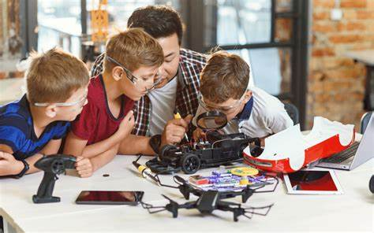

Importancia de la Robotica Educativa
La robótica educativa es fundamental en la formación de los estudiantes, ya que fomenta el aprendizaje activo y el desarrollo de habilidades clave. A través de la construcción y programación de robots, los alumnos mejoran su pensamiento crítico, su capacidad de resolución de problemas y su creatividad. Además, la robótica integra conceptos de matemáticas, ciencias y tecnología de manera práctica y lúdica, lo que facilita la comprensión de estos temas. También promueve el trabajo en equipo y la comunicación, ya que los proyectos suelen ser colaborativos. En un mundo cada vez más digital, la robótica educativa prepara a los estudiantes para las demandas del futuro laboral, donde las habilidades tecnológicas serán esenciales. En resumen, esta disciplina no solo enriquece el aprendizaje, sino que también motiva a los jóvenes a explorar y participar activamente en el mundo tecnológico.
TIPOS DE ROBOT
- Robot Car
- Brazo robótico
- Robot explorador